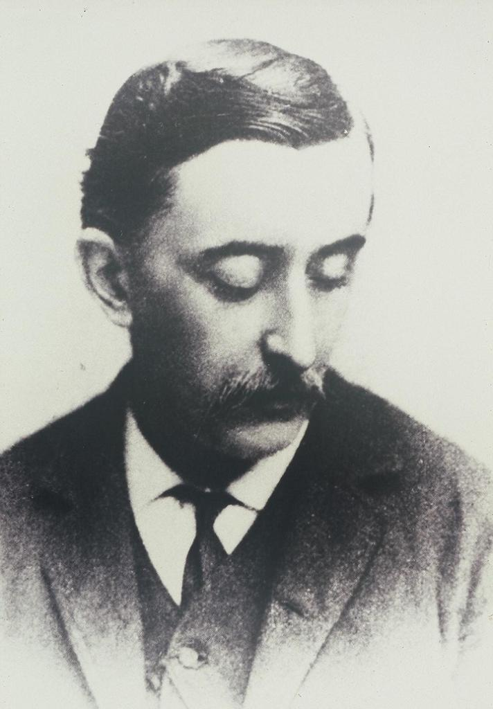
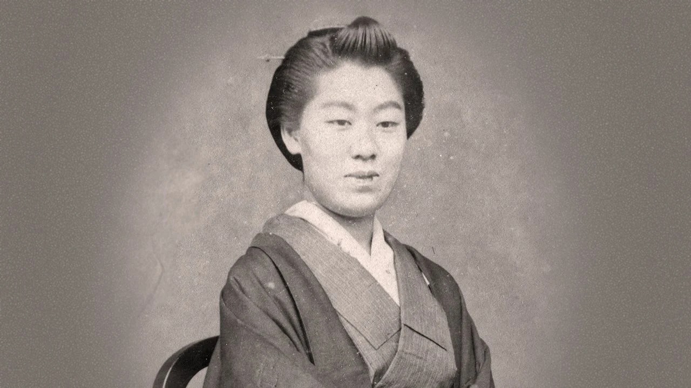
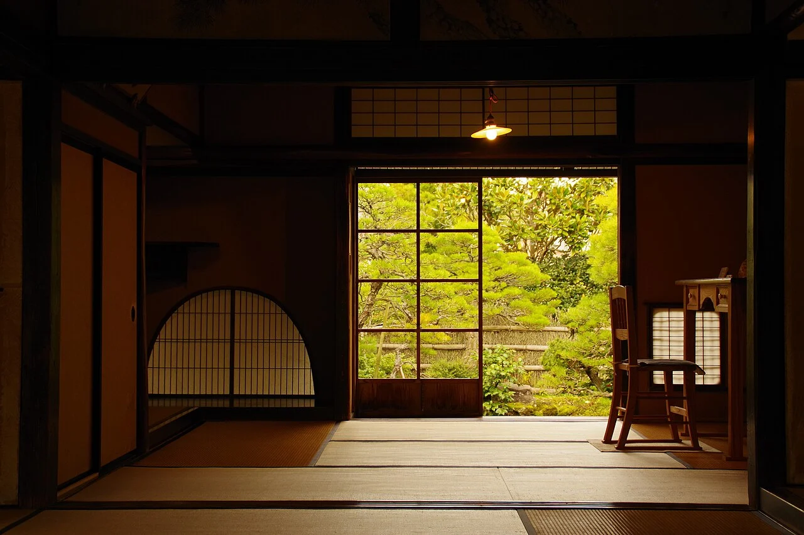

Путевой альбом · перед встречей с Мацуэ
Лафкадио Хирн.
Между мирами.
Репортёр, странник и рассказчик. Он приехал в Японию почти в сорок — и стал Коидзуми Якумо.
Прежде чем гулять по Мацуэ, заглянем в его Японию: через сад, семейные истории и «Кайдан».

Подлинная фотография · public domain
Для тех, кто слышит это имя впервые
Кто он —
и зачем нам его знать?
Один из писателей, через которых англоязычный читатель знакомился с Японией эпохи Мэйдзи.
Он писал об обыденном и необычном: о школе и святилищах, семейных привычках, насекомых и встречах с призраками. Его жанры — репортаж, путевой очерк, эссе и литературный пересказ.
Имя Хирна после получения японского гражданства в 1896 году.
До Японии
Одна жизнь.
Несколько берегов.
Япония — последний большой этап его странствий. Выбери остановку, чтобы перелистнуть путь.
Главная глава · 1890–1904
Четырнадцать лет
в Японии.
Мацуэ, Кумамото, Кобэ, Токио — четыре разных этапа. «Кайдан» появился в конце этого пути.
В Мацуэ ищи не только призраков. В главе «В японском саду» Хирн смотрит на камни, растения и живых обитателей сада. Попробуй и ты сначала остановиться и посмотреть.
В этой истории есть ещё один голос
Сэцу.
Рассказчица рядом.
За английскими страницами нередко звучала японская устная речь.
Коидзуми Сэцу начала работать в доме Хирна в 1891 году; вскоре они стали жить как семья. В 1896-м оформили брак. У них было четверо детей.
Сэцу рассказывала ему истории и помогала в литературной работе. Музей называет её литературной помощницей: это существенный вклад, который легко потерять за именем автора на обложке.

Историческая фотография · public domain
Как появлялись истории
Небольшая книжная полка
Не только
страшные истории.
Оригинальные названия помогут найти книги. Русские подписи ниже — короткие пояснения, а не список конкретных переводных изданий.
С чего начать вашей компании
Хочется мистики? «Кайдан».
Хочется увидеть Мацуэ иначе? Glimpses of Unfamiliar Japan.
У ночного рассказчика
Три двери
в «Кайдан».
Выбери историю. Сначала — завязка; развязку откроешь по желанию. Здесь наши краткие пересказы, без вымышленных цитат Хирна.
Иллюстрации — современные художественные образы. Они не являются историческими гравюрами.

Теперь это точка на нашей карте
Встретимся
в Мацуэ.
Рядом находятся музей Хирна и дом, в котором он жил с Сэцу. Музей даёт биографический контекст; в доме можно увидеть среду, о которой он писал.
Маленькое задание на прогулку: выбери одну деталь сада и задержись на ней на минуту. Не ищи «правильное впечатление» — просто попробуй смотреть внимательно.
Часы работы и условия посещения лучше проверить на официальных сайтах перед визитом.
Что здесь документ, а что — оформление
За страницами.
Биографические сведения сверены по музейным и институциональным источникам. Оформление, подсказки и краткие пересказы подготовлены для этого альбома.
Источники фактов и текстов
Биографии для дальнейшего чтения
Jonathan Cott. Wandering Ghost: The Odyssey of Lafcadio Hearn. Издание Kodansha International, 1992. Карточка издания.
Paul Murray. A Fantastic Journey: The Life and Literature of Lafcadio Hearn. 1993. Страница издательства.
Полные тексты этих биографий при подготовке страницы не были доступны. Они приведены как дальнейшее чтение; конкретные факты на странице опираются на перечисленные выше материалы.
Изображения, звук и сохранение
Подлинные фотографии: Хирн, 1889; Коидзуми Сэцу; дом в Мацуэ, 2019. На Wikimedia Commons отмечены как public domain.
Обложка и иллюстрации историй созданы с помощью ИИ. Это художественные образы, а не реконструкции. Дождь: Ylmir, Rain, CC0. Озвучка — записанный нейроголос.
Список «почитать» хранится только в этом браузере. Сохранить страницу для доступа без сети можно кнопкой ниже; внешние источники по-прежнему требуют интернет.